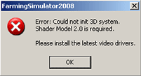
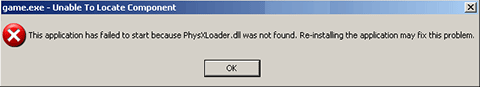
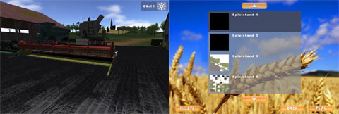

Here you can find solutions to some problems that occured to people back in 2008/2009.
Problem: Error: Could not init 3D system. Shader Model 2.0 is required. Please install the latest video drivers.

Solution for NVIDIA or AMD/ATI graphic cards:
Farming Simulator requires the latest graphics card drivers. Please download and install the latest drivers for your graphics card. (AMD/ATI or NVIDIA)
Solution for SiS, S3 or Intel graphic cards:
Farming Simulator doesn't work with software graphics cards. Please buy a real graphics card from NVIDIA or AMD/ATI. (AMD/ATI or NVIDIA)
Problem: PhysXLoader.dll could not be found

Solution for Windows XP:
Farming Simulator requires with Windows XP the service pack 2. Please install service pack 2 for Windows XP and reinstall the Farming Simulator. (Microsoft Update)
Solution for Windows Vista:
The NVIDIA Physx System Software Installer has issues with some Vista systems. Please install the newest PhysX System Software Installer from NVIDIA. (PhysX_8.04.25_SystemSoftware.exe)
Problem: Graphic issues on NVIDIA graphic cards with driver 175.16. The NVIDIA driver from May 13th 2008, version 175.16, causes graphic issues in the game due to a bug in the driver.

Solution: The addon of Farming Simulator fixes this problem. Please install the addon (Addon)
Problem: The camera turns around all the time without any user input
Solution: This could be caused by a uncalibrated gamepad or joystick. Please unconnect all gamepads or joysticks from your computer or recalibate them.